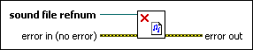

Sound File Close VI
Owning Palette: Sound Files VIs
Requires: Base Development System
Closes a .wav file.
(Windows) You must have DirectX 8.0 or later to use this VI. (Linux) You must have the Open Sound System (OSS) driver to use this VI.

 Add to the block diagram Add to the block diagram |
 Find on the palette Find on the palette |